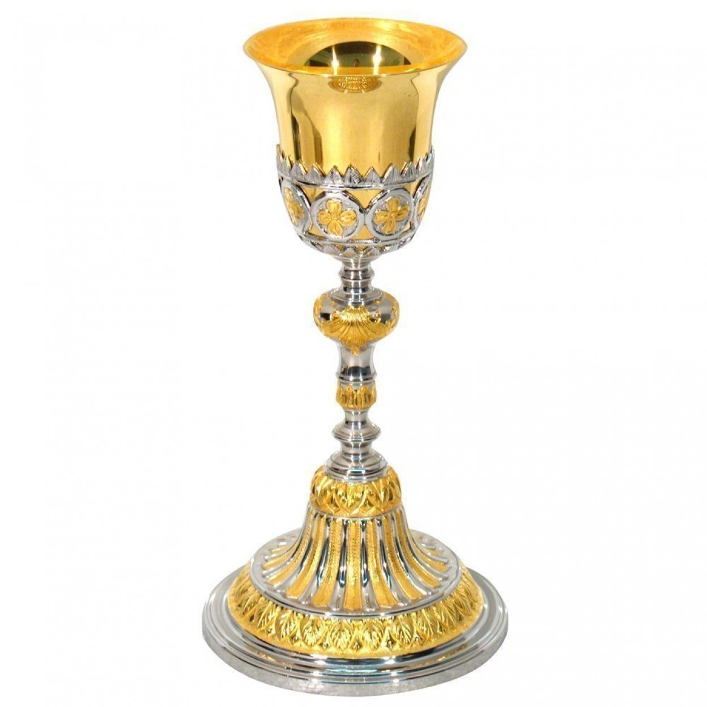
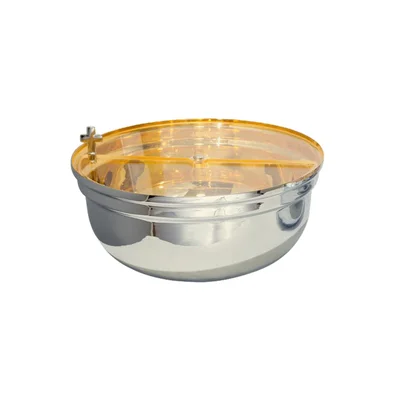
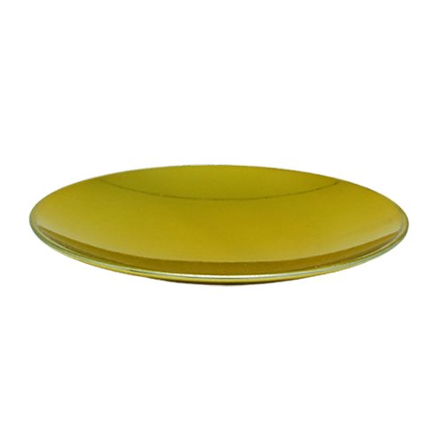
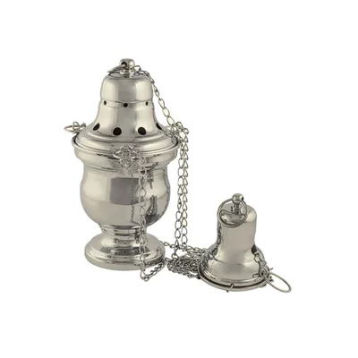
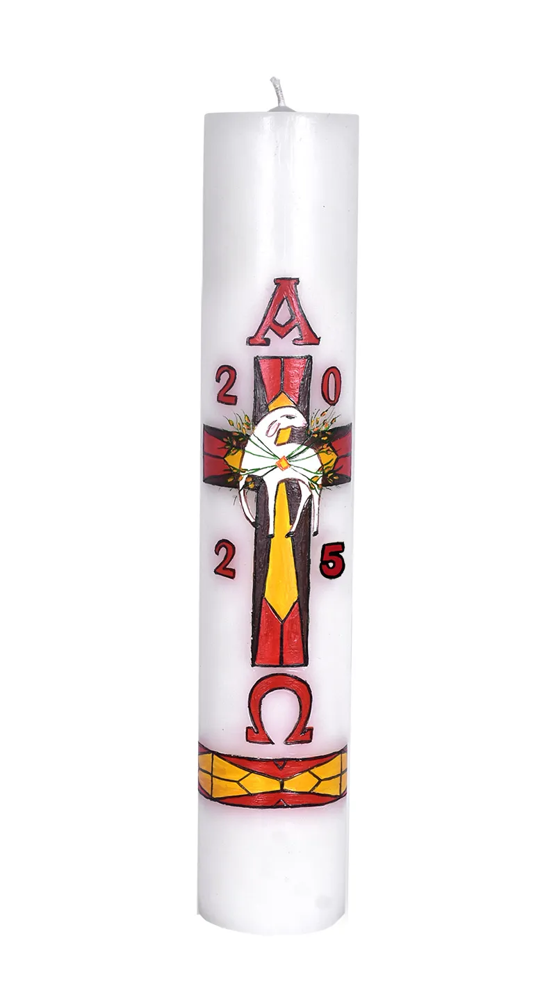
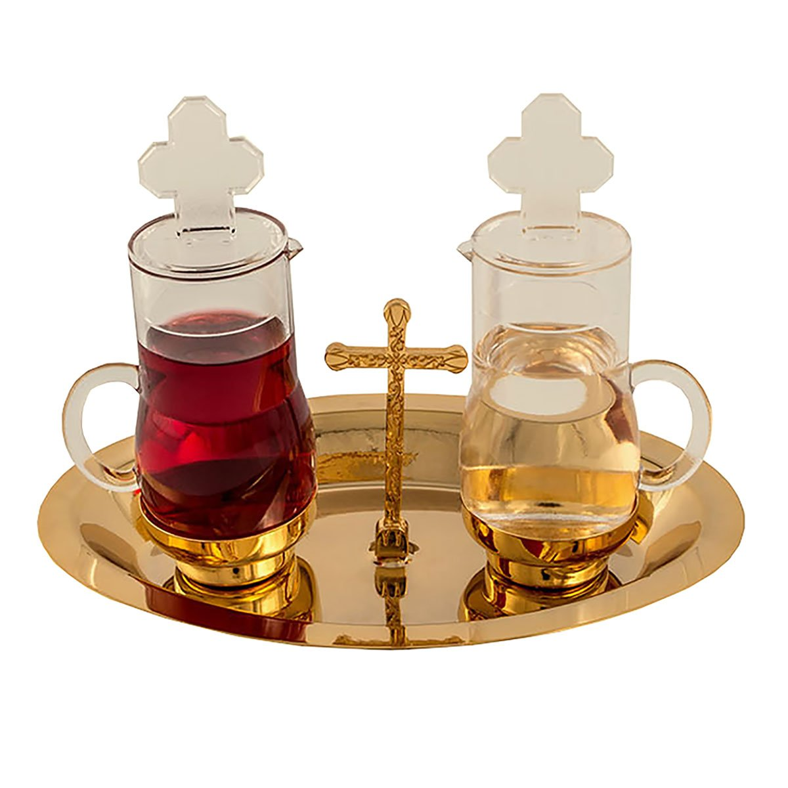

Cálice
Uso: Contém o vinho que se tornará o Sangue de Cristo durante a consagração. É manipulado com grande respeito.
Âmbula
Uso: Usada para guardar as hóstias consagradas, especialmente durante a comunhão e para reserva no sacrário.
Patena
Uso: Pequeno prato utilizado para conter a hóstia grande que será consagrada e para distribuição da Eucaristia.
Turíbulo e Naveta
Uso: O turíbulo serve para queimar o incenso; a naveta armazena o incenso antes de ser usado. Utilizados em celebrações solenes.
Círio Pascal
Uso: Grande vela acesa na Vigília Pascal, representando a luz de Cristo. Permanece acesa durante o Tempo Pascal e batismos.
Galhetas
Uso: Frascos de vidro ou cristal usados para conter água e vinho que serão levados ao altar no ofertório.